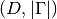
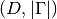

QuadratureRule¶
About the QuadratureRule class¶
The WaveBlocks Project
@author: R. Bourquin @copyright: Copyright (C) 2010, 2011, 2012, 2013, 2014, 2015, 2016 R. Bourquin @license: Modified BSD License
Inheritance diagram¶

Class documentation¶
-
class
WaveBlocksND.QuadratureRule[source]¶ This class is an abstract interface to quadrature rules in general.
-
get_description()[source]¶ Return a description of this quadrature rule object. A description is a
dictcontaining all key-value pairs necessary to reconstruct the current instance. A description never contains any data.
-
get_nodes()[source]¶ Returns: A two-dimensional ndarray containing the quadrature nodes  .
The array must have a shape of .
.
The array must have a shape of .
-
 of the quadrature rule.
of the quadrature rule. that are
part of this quadrature rule
that are
part of this quadrature rule  .
. .
The array must have a shape of
.
The array must have a shape of  .
.